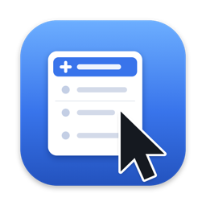

The right-click menu Finder was missing.
The menu items don't appear. Make sure the extension is enabled (step 2). If it still doesn't show, quit and reopen Finder (hold Option, right-click Finder in the Dock › Relaunch).
Why does it ask for folder access? RightClick Plus is sandboxed. It can only create or move files in folders you allow.
Can I use ⌘X to cut? macOS doesn't let Finder extensions add keyboard shortcuts. Use Cut and Paste from the right-click menu.
How do I add my own template? Open RightClick Plus and drag any file into “My templates”, or choose New File › Manage Templates… in Finder.
Email: contacto@creamun.com · Privacy Policy
No aparecen las opciones. Comprueba que la extensión está activada (paso 2). Si aun así no salen, reinicia Finder (mantén Opción, clic derecho en Finder en el Dock › Reiniciar).
¿Por qué pide acceso a carpetas? La app funciona en un entorno protegido (sandbox) y solo puede crear o mover archivos en las carpetas que autorices.
¿Puedo cortar con ⌘X? macOS no permite que las extensiones de Finder añadan atajos de teclado. Usa Cortar y Pegar del menú contextual.
¿Cómo añado una plantilla propia? Abre RightClick Plus y arrastra cualquier archivo a «Mis plantillas», o elige Nuevo archivo › Gestionar plantillas… en Finder.
Contacto: contacto@creamun.com · Política de privacidad